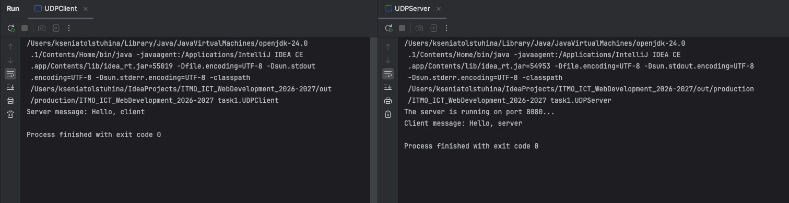

Задание 1 - Обмен сообщениями по UDP
Задача
Клиент отправляет серверу Hello, server, сервер выводит это сообщение и отвечает Hello, client, которое выводится у клиента. Протокол — UDP
Теория
UDP - протокол без установления соединения. Отправитель просто посылает датаграмму, не дожидаясь подтверждения. Это быстрее TCP, но не гарантирует ни доставку, ни порядок пакетов
В Java работа с UDP — это DatagramSocket, DatagramPacket, InetAddress
Код сервера
package task1;
import java.net.*;
public class UDPServer {
public static void main(String[] args) throws Exception {
int PORT = 8080;
DatagramSocket socket = new DatagramSocket(PORT);
System.out.println("The server is running on port 8080...");
byte[] buffer = new byte[1024];
DatagramPacket packet = new DatagramPacket(buffer, buffer.length);
socket.receive(packet);
String clientMsg = new String(packet.getData(), 0, packet.getLength(), "UTF-8");
System.out.println("Client message: " + clientMsg);
String response = "Hello, client";
byte[] encodedResponse = response.getBytes("UTF-8");
DatagramPacket responsePacket = new DatagramPacket(encodedResponse, encodedResponse.length, packet.getAddress(), packet.getPort());
socket.send(responsePacket);
socket.close();
}
}
Код клиента
package task1;
import java.net.*;
public class UDPClient {
public static void main(String[] args) throws Exception {
String HOST = "localhost";
int PORT = 8080;
DatagramSocket socket = new DatagramSocket();
InetAddress serverAddress = InetAddress.getByName(HOST);
String request = "Hello, server";
byte[] encodedRequest = request.getBytes("UTF-8");
DatagramPacket requestPacket = new DatagramPacket(encodedRequest, encodedRequest.length, serverAddress, PORT);
socket.send(requestPacket);
byte[] buffer = new byte[1024];
DatagramPacket packet = new DatagramPacket(buffer, buffer.length);
socket.receive(packet);
String serverMsg = new String(packet.getData(), 0, packet.getLength(), "UTF-8");
System.out.println("Server message: " + serverMsg);
socket.close();
}
}
Запуск
javac -d out src/task1/UDPServer.java src/task1/UDPClient.java
# Терминал 1
java -cp out task1.UDPServer
# Терминал 2
java -cp out task1.UDPClient
Пример
